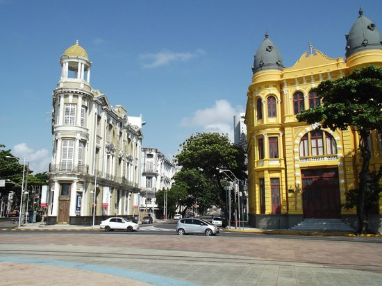

Marco Zero

O Marco Zero é um dos lugares mais famosos do Recife Antigo. Ele é conhecido por sua beleza, cultura e pela vista incrível.
Conhecer outros pontos turísticos
O Marco Zero é um dos lugares mais famosos do Recife Antigo. Ele é conhecido por sua beleza, cultura e pela vista incrível.
Conhecer outros pontos turísticos